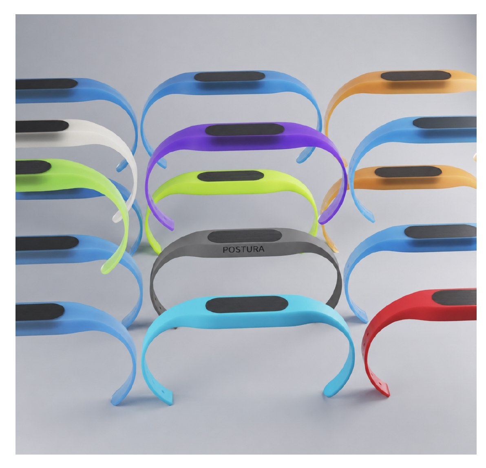
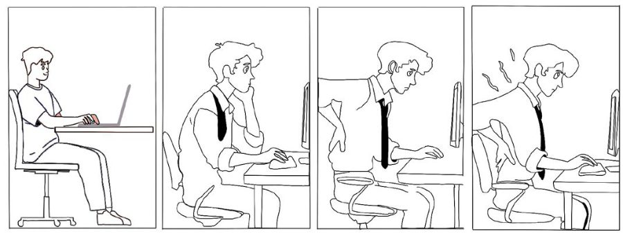
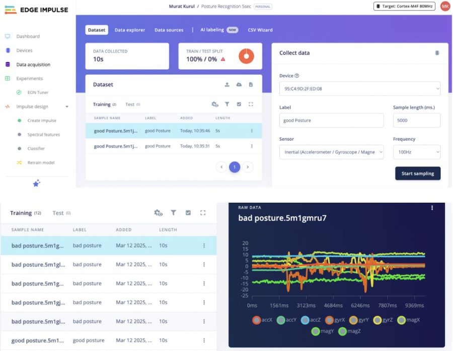

An Arduino-programmed wearable that uses motion sensors to detect poor posture through the day, and vibrates when it finds it.

The storyboard shows the user gradually beginning to slouch while working. Postura detects the change and vibrates, reminding them to correct their posture before it settles into a habit.

I used Arduino and Edge Impulse to train Postura to recognise good and poor posture from motion-sensor data, then tuned the threshold so the haptic prompt fires on a real slouch rather than every small movement.
